JACO BEACH & LOS SUEÑOS, COSTA RICA
RAFTING TOURS & DAY TRIPS WITH JACO VIP
YOUR #1 SOURCE FOR GROUP VACATION PLANNING
TOLL FREE# 800-676-0717 • JACO OFFICE# 2643-6560

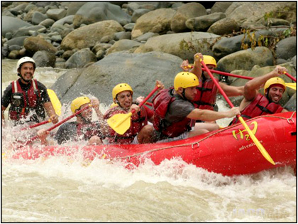
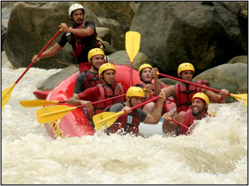
White Water Rafting with Jaco VIP in Costa Rica
The most exhileraing and fun rafting experience in the region!

•••
WWR / CLASS 2, 3 OR 4 (Occasionally 5)
RAFTING LOCATION :
Aproximately 1 hour and 15 minutes south of the Jaco Beach / Los Sueños Marriott Resort area.
TOUR START TIMES :
Between 8am and 10am. Depending on Season and Water Levels.
Pick up from your house or condo is1 hour & 30 minutes prior to your scheduled tour start time. Transportation is not included. Add $25/person [Minimum 6 People] for private transportation.
WHAT TO BRING :
• Tennis Shoes, Strapped Sandals and Aqua Shoes can all work. Think wet but comfortable. Flip flops will not work.
• Sunblock, Swimsuit, Dry Change of Clothes, Towel...
• Waterproof camera. Photos and videos available for sale.
CLICK BACK TO MAIN TOURS PAGE : OR CALL US NOW FOR EXCLUSIVE PACKAGE DEALS!
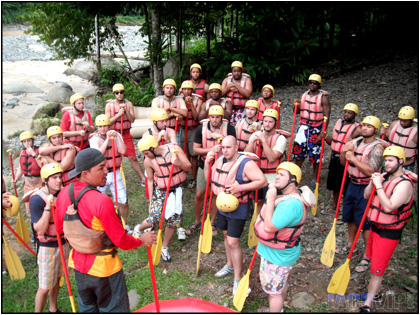
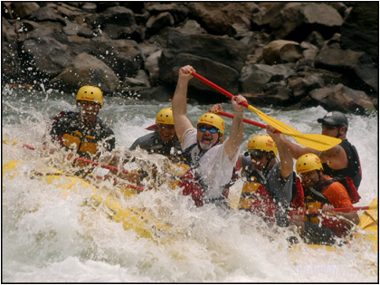
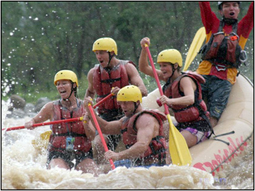
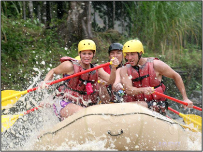
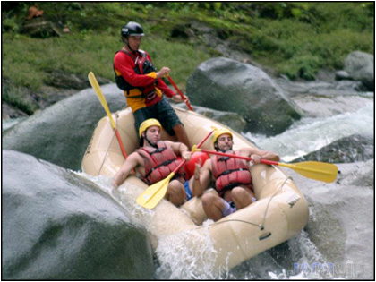
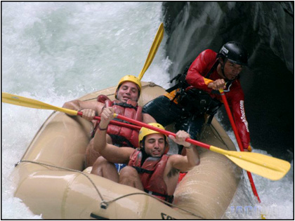
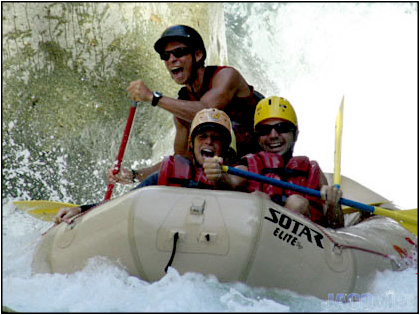
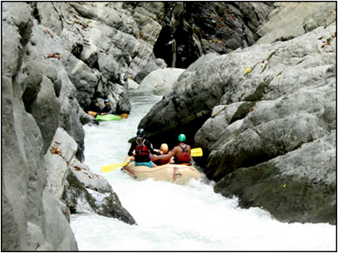
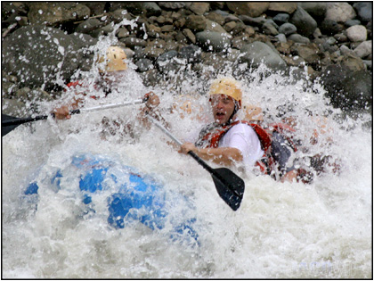
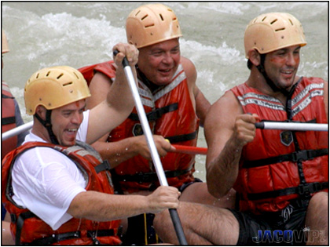
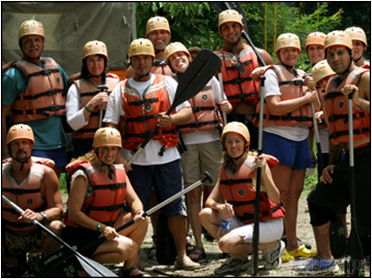
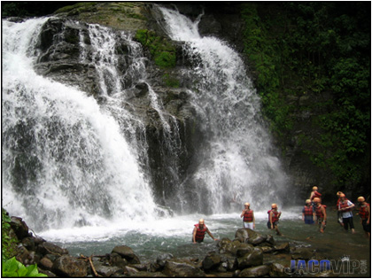
THE CHORRO SECTION starts in the mountain village of Esquipulas. Our route carves deep into the river’s exposed bedrock, making this thrilling section of the Naranjo River an exception to the geological youth of Costa Rica. This 3km canyon delights the adventure seeker with fun drops and steep runs through 12 technical narrows. Be ready!! to bounce and squeeze through the gorge’s tight rock walls, maneuver and carve around massive boulders and bends, and sweep down drops through challenging unforgettable chutes. Within the 2 mile stretch we will tackle rapids such as, “Tail of the Dragon”, “ Chorro” and “Asteric & Obelisc”. (Seasonal - January to April)
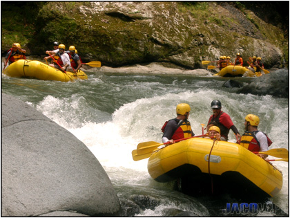
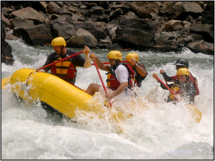
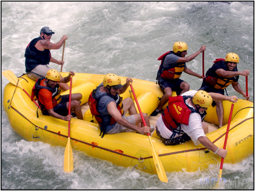
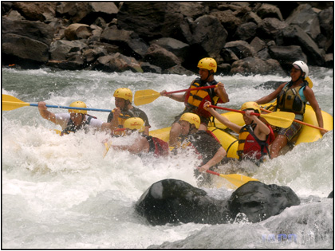
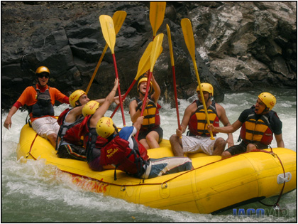
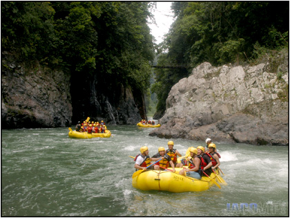
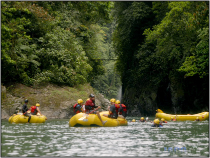
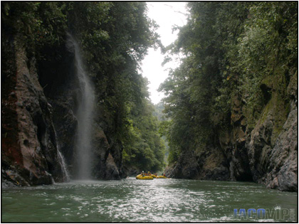
30 MINUTES INTO THE MOUNTAINS...
from the Manuel Antonio / Quepos area, the Naranjo River offers an exhilarating, exploding section of white water. This river is the natural southern border of Manuel Antonio National Park. The section we run goes from the town of Villanueva in the mountains to the Llamarón Bridge on the road from Quepos to Dominical. On these 6 miles of whitewater we will run rapids like “La Piñata”, “El Cesar” & “Robin Hood”. On the second half of our run the river opens up on the Pacific flatlands giving us the opportunity to enjoy the view of many species of birds like the Ringed King Fisher and the White Ibis. With a little bit of luck we might even be able to see one of the small crocodiles that live on the river! (Runs all year)
from the Manuel Antonio / Quepos area, the Naranjo River offers an exhilarating, exploding section of white water. This river is the natural southern border of Manuel Antonio National Park. The section we run goes from the town of Villanueva in the mountains to the Llamarón Bridge on the road from Quepos to Dominical. On these 6 miles of whitewater we will run rapids like “La Piñata”, “El Cesar” & “Robin Hood”. On the second half of our run the river opens up on the Pacific flatlands giving us the opportunity to enjoy the view of many species of birds like the Ringed King Fisher and the White Ibis. With a little bit of luck we might even be able to see one of the small crocodiles that live on the river! (Runs all year)
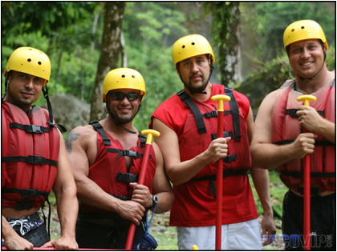
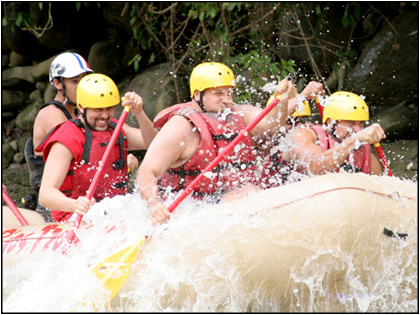
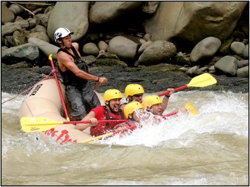
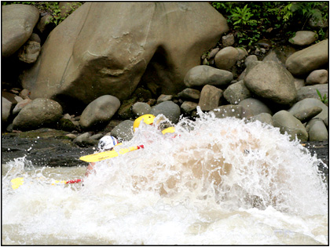
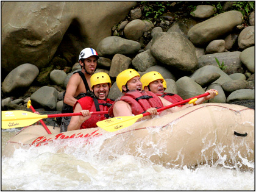
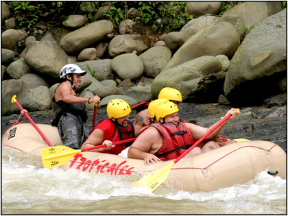
JACO BEACH & LOS SUEÑOS COSTA RICA
RAFTING TOURS & DAY TRIPS WITH JACO VIP
YOUR #1 SOURCE FOR GROUP VACATION PLANNING
TOLL FREE# 800-676-0717 • JACO OFFICE# 2643-6560